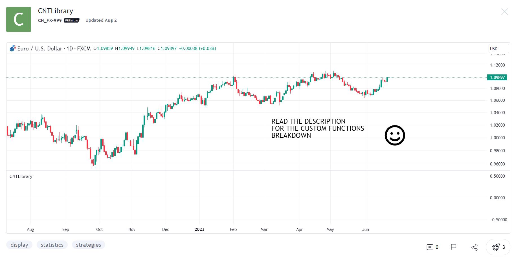

Public PineScript V5 Library
Role: Creator and Developer
Project Description:
Motivated by my passion for enhancing trading analysis tools, I embarked on a personal project to develop a custom library of functions in TradingView using PineScript V5. This initiative was a natural progression following my completion of TheArtOfTrading's PineScript Master Course and was designed to contribute significantly to the TradingView community.
My Role:
As the sole creator and developer, I managed the entire development process of the library. This involved ideation, coding sophisticated functions in PineScript V5, meticulous testing, and ultimately, making it available for public use. My focus was on crafting functions that were not only effective but also user-friendly, catering to a wide range of needs in trading analysis.
Outcome:
The library quickly gained traction within the TradingView community, with over 100 users adopting these custom functions for their own trading scripts. The library's popularity is a reflection of its practical utility and the value it adds to traders' analytical capabilities.
Skills Utilized:
- Comprehensive understanding of market dynamics and trading concepts, crucial for developing relevant and useful functions.
- Expertise in PineScript V5, showcasing my ability to code complex functions tailored for financial analysis.
Source Code: See the TradingView post here.